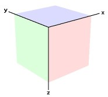
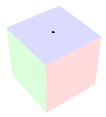
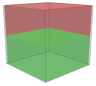
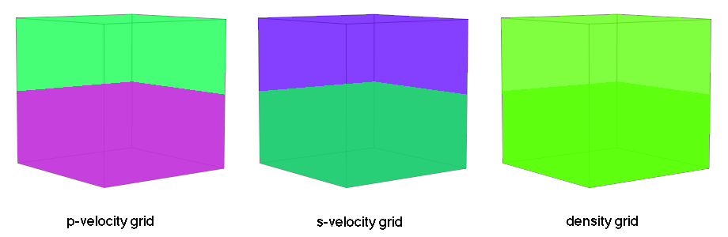
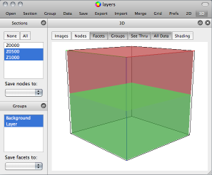
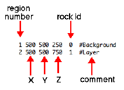
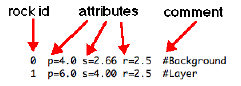
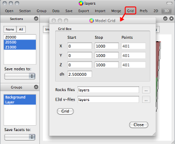

… run E3d on Torngat¶
How to run E3d on Torngat¶
08 Jan 2013
This note describes how to run E3d on the Torngat cluster.
E3d is a computer program for simulating seismic waves in an elastic medium. Simulation parameters are specified in an input parameter file. Simple models of the elastic medium (earth model) can be specified in the input parameter file. More complex models must be specified in a separate set of files known as vfiles. The simulated acoustic waves are output as seismic trace files and/or image files.
The elastic medium is modeled as a box shaped set of uniformly spaced points referred to as a grid. The grid is defined in a left handed coordinate system (positive z axis pointing down).
The input parameter file is an ascii (text) file containing a series of commands. Each command consists of a keyword followed by one or more parameter-value pairs. The basic commands are as follows:
- grid
specifies the grid dimensions and boundary conditions
- time
specifies the simulation time, step interval
- source
specifies the source location, source waveform, source time delay
- block
specifies the velocity, density for a specified block of the grid
- parallel
specifies the partitioning of the model grid for parallelization
- traces
specifies the geometry of the receivers for a seismic line
The grid command specifies the geometry and boundary conditions of the model. The basic parameters are as follows:
- l
the number of grid points in the y direction [required]
- m
the number of grid points in the z direction [required]
- n
the number of grid points in the x direction [required]
- dh
the grid point spacing in all directions (in kilometers)
- b
grid boundary conditions
1 = reflecting
2 = absorbing
3 = surface [default]
4 = surface modified for acoustic instabilities
To demonstrate how to use E3d we consider an earth model which is 1 kilometer by 1 kilometer by 1 kilometer (a cube). We will set the grid point spacing to 2.5 meters. The grid dimensions are thus 401 by 401 by 401 points, a grid size of approximately 64 million points.
We choose to make the surface reflecting and the sides and bottom of the grid absorbing so we use b=3 which is the default so we do not need to specify it explicitly. The grid command will look like this:
grid l=401 m=401 n=401 dh=0.0025
Note there must not be any spaces on either side of the equal signs.
The time command time simulation time and the simulation time step interval. The basic parameters are as follows:
- t
number of time-steps [required]
- dt
time-stepping increment (seconds) [required]
We will set up the job to solve the wave equation for a time duration of ½ second. We choose a time step size of 0.2 milliseconds. 2500 time steps are required for a time duration of ½ second.
The time command will look like this:
time t=2500 dt=0.000200
The source command describes the source function and position. The basic parameters are as follows:
- type
source type [required]
1=P wave
2=S wave
4=Moment Tensor
5=Force
6=Fault (point source)
7=Fault (finite length)
8=Distributed Slip (from file)
9=Distributed Slip (from file with rise-times)
- amp
amplitude of source (in dyne-cm) [required]
- freq
central frequency of source in Hz [default = 1.0]
- t0
shift in start time of the source in seconds [default = 0]
- x
x position of source (kilometers) [default = center of grid]
- y
y position of source (kilometers) [default = center of grid]
- z
z position of source (kilometers) [default = center of grid]
For our example we choose to position the source on the surface in the center of the model.
The model is a 1 km cube, so we set the source position as x=0.5 km, y=0.5 km, z=0 km, at the surface. We choose a compressional source (P wave) so we set type=1. The source function is a Ricker wavelet. We choose a center frequency of 40 Hertz so we set freq=40.0. We set the source amplitude to 1.0 x 10+27 dynes (this is rather arbitrary). The time shift is an important parameter. The default is zero which will cause ringing artifacts in the simulated waves. We use a nominal shift of 25 milliseconds to minimize ringing so we set t=0.025. The source command will look like this:
source type=1 amp=1.e27 freq=40.0 t0=0.025 x=0.500 y=0.500 z=0.000
The block command describes the velocity, density and attenuation of the model at each grid point within a specified block (sub-region) of the grid. The basic parameters are as follows:
- p
p-wave velocity (km/sec) [default = none]
- s
s-wave velocity (km/sec) [default = none]
- r
density (g/cm**3) [default = none]
- l1
index of first grid point of block element in y dimension [ default = 0]
- l2
index of last grid point of block element in y dimension [default = end of grid]
- m1
index of first grid point of block element in z dimension [default = 0]
- m2
index of last grid point of block element in z dimension [default = end of grid]
- n1
index of first grid point of block element in x dimension [default = 0]
- n2
index of last grid point of block element in x dimension [default = end of grid]
We choose a simple two layer model for the purpose of demonstrating how to specify the model.
We will model the top layer with a p-wave velocity of 4 km/sec so we set p=4.0. We model the top layer with s-wave velocity of 2/3 the p-wave velocity so we set s=2.67 . We set the top layer density to 2.5 grams per cubic centimeter with r=2.5 . We will consider these attributes to be the background. We initially model the entire grid as background like so:
block p=4.0 s=2.67 r=2.5
We now model the second layer. We will model the p-wave velocity of the lower layer to be 6 km/sec, the s-wave velocity to be 4 km/sec and the density to be 2.5 grams per cc by setting s=6.0, s=4.0 and r=2.5 . The top of the lower layer is ½ kilometre below the surface so we set m1=200 which is halfway down the z axis. The bottom of the lower layer is at the bottom of the grid so we set m2=400 which the last point on the z axis. The sides of the lower layer are the sides of the grid. The block command for the second layer is thus:
block p=4.0 s=2.67 r=2.5 l1=0 l2=400 m1=200 m2=400 n1=0 n2=400
Each successive block can potentially overwrite the grid points of preceeding blocks. In our case the second block overwrote the lower half of the background defined in the first block command.
E3D can simulate the seismic signal at specified receiver locations in the grid.
E3D can simulate the seismic signal at specified receiver locations in the grid. The traces command is used to specify a line of receivers. The basic parameters are as follows:
- mode
bitwise component(s) to output (1=Vx;2=Vy;4=Vz;8=P;16=S) [default=31 (all)]
- sample
time sub-sampling factor for traces [default=1]
- file
file name header of traces file [default=”traces”]
- x1
starting x coordinate for traces (km) [default=0.]
- x2
ending x coordinate for traces (km) [default=0.]
- y1
starting y coordinate for traces (km) [default=0.]
- y2
ending y coordinate for traces (km) [default=0.]
- p
number of traces along coordinate line (inclusive) [default=0]
The trace command can specify one line of receivers. A separate trace command is required for each line of receivers. We will orient the lines parallel to the y axis by specifying the endpoints y1=0.000 and y2=1.000 . To position the first line on the x axis at x=0 we specify x1=0.0 and x2=0.0 . We specify a receiver at every other grid point by setting the number of receviers p=201 . The recevier spacing will thus be 5 meters in our example. The traces for a line of receivers will be output in a file. A separate file is written for each seismic line. We identify the x position of the line in the file name prefix by specifying file=”traces/line.x.0000”. This also specifies that the file be written in a sub-directory called traces. We will output trace samples every 5-th time step by specifying sample=5 . Since the time step is 200 micro-seconds then the sample interval will be 1 millisecond. We will record the pressure wave at each recevier so we set mode=8. The trace card for the first line looks like this:
traces mode=8 sample=5 file=”traces/line.x.000” p=201 \
x1=0.000 x2=0.000 y1=0.000 y2=1.000
The backslash character is used to continue a command onto the next line of text in the parameter file.
We want a seismic line at every other grid point along the x axis which will require 201 trace commands. This would be tedious to do by hand so we write a program (or a script) to do this for us. The following C program will do the trick:
1 2 3 4 5 6 7 8 9 10 11 12 13 14 15 16 17 18 19 20 21 22 23 24 25 26 27 28 29 30 31 32 33 34 35 36 37 38 | /*********************************************************************************
This program creates a set of trace cards for E3D. The trace cards describe
a seismic line layout on the surface of a rectangle. The rectangle size is
L x N points. The point spacing is dh. The geophones are laid out in the
y dimension on every grid point in a straight line. The grid spacing is dh.
*********************************************************************************/
#define L 201 // number of receivers per line
#define N 201 // number of seismic lines
#define ds 5.0 // receiver spacing (meters)
#include <stdlib.h>
#include <stdio.h>
#include <string.h>
int main(int argc, char argv[])
{
FILE *file = fopen("tracecards", "w");
if (!file) printf("cannot open file!\n");
float y1 = 0.0; // position of 1st geophone on the line
float y2 = ((float)((L-1)*ds)) / 1000.0; // position of last geophone (km)
for (int i=0; i<N; i++) // for each line on the x axis
{
int ix = i*ds; // position of seismic line on the x axis (meters)
float x = ((float)ix) / 1000.0; // position of seismic line on x axis (km)
fprintf(file, "traces mode=8 sample=5 file=\"traces/line.x.%04d\" p=%d \\\n",
ix, L);
fprintf(file, " x1=%5.3f x2=%5.3f y1=%5.3f y2=%5.3f z1=0.000 z2=0.000\n",
x, x, y1, y2);
};
int error = fclose (file);
if (error) printf("error writing output file\n");
exit(0);
}
|
Call the C program traces.c.
Compile and run the C-program in a shell like so:
$ cc -std=c99 traces.c -o traces
$ ./traces
The program creates an ascii file called tracecards. The contents of the file look like this:
traces mode=8 sample=5 file="traces/line.x.0000" p=201 \
x1=0.000 x2=0.000 y1=0.000 y2=1.000 z1=0.000 z2=0.000
traces mode=8 sample=5 file="traces/line.x.0005" p=201 \
x1=0.005 x2=0.005 y1=0.000 y2=1.000 z1=0.000 z2=0.000
traces mode=8 sample=5 file="traces/line.x.0010" p=201 \
x1=0.010 x2=0.010 y1=0.000 y2=1.000 z1=0.000 z2=0.000
.....
traces mode=8 sample=5 file="traces/line.x.0990" p=201 \
x1=0.990 x2=0.990 y1=0.000 y2=1.000 z1=0.000 z2=0.000
traces mode=8 sample=5 file="traces/line.x.0995" p=201 \
x1=0.995 x2=0.995 y1=0.000 y2=1.000 z1=0.000 z2=0.000
traces mode=8 sample=5 file="traces/line.x.1000" p=201 \
x1=1.000 x2=1.000 y1=0.000 y2=1.000 z1=0.000 z2=0.000
There are 201 trace commands in the file, one for every line along the x axis. Note that each command is specified on two lines of text in the parameter file using the continuation character ‘'.
We are going to run E3d on the Torngat cluster. We will instruct E3d to divide the model grid into subvolumes of identical size. Each sub-volume will be processed by a separate core of the cluster. The more sub-volumes, the faster the job will run.
The parallel command specifies the way the model grid will be sub-divided (partitioned) for execution in a parallel environment. There are three parameters:
- nx
number of partitions in the x dimension [default = 1]
- ny
number of partitions in the y dimension [default = 1]
- nz
number of partitions in the z dimension [default = 1]
We will sub-divide the y and z dimensions into 8 partitions each but leave the x dimension undivided. This partitioning scheme results in 64 sub-volumes. The parallel command looks like this:
parallel nx=1 ny=8 nz=8
We put all the commands in the input parameter text file which we call layers.e3d. The contents of the parameter file looks like this:
grid l=401 m=401 n=401 dh=0.002500
time t=2500 dt=0.000200
source type=1 freq=40 amp=1.00e+27 t0=0.025 x=0.500 y=0.500 z=0.000
block p=4.0 s=2.67 r=2.5
block p=6.0 s=4.00 r=2.5 \
l1=0 l2=400 m1=200 m2=400 n1=0 n2=400
parallel nx=1 ny=8 nz=8
traces mode=8 sample=5 file="traces/line.x.0000" p=201 \
x1=0.000 x2=0.000 y1=0.000 y2=1.000 z1=0.000 z2=0.000
traces mode=8 sample=5 file="traces/line.x.0005" p=201 \
x1=0.005 x2=0.005 y1=0.000 y2=1.000 z1=0.000 z2=0.000
traces mode=8 sample=5 file="traces/line.x.0010" p=201 \
x1=0.010 x2=0.010 y1=0.000 y2=1.000 z1=0.000 z2=0.000
.....
traces mode=8 sample=5 file="traces/line.x.0990" p=201 \
x1=0.990 x2=0.990 y1=0.000 y2=1.000 z1=0.000 z2=0.000
traces mode=8 sample=5 file="traces/line.x.0995" p=201 \
x1=0.995 x2=0.995 y1=0.000 y2=1.000 z1=0.000 z2=0.000
traces mode=8 sample=5 file="traces/line.x.1000" p=201 \
x1=1.000 x2=1.000 y1=0.000 y2=1.000 z1=0.000 z2=0.000
The job will be submitted to the cluster using the Sun N1 Grid Engine. The job is specified in an ascii text file. We refer to this file as the job deck. The job deck for our E3d run will look like this:
#$ -cwd
#$ -N layers
#$ -o layers.output -j y
#$ -pe impi 64
#$ -l qname=all.q
#$ -V
MakeMachineFile()
{
cat $1 | while read line; do
host=`echo $line|cut -f1 -d" "|cut -f1 -d"."`
nprocs=`echo $line|cut -f2 -d" "`
echo "$host:$nprocs"
done
}
MakeMachineFile $PE_HOSTFILE >machines.$JOB_ID
mpiexec.hydra --machinefile=machines.$JOB_ID /home/gblades/bin/e3d layers.e3d
rm machines.$JOB_ID
The job deck is in a file we will call layers.ge.
The directives section specifies the computing environment and resources that are needed to do the job. Each directive starts with #$ . There must be no space before the #$ but there should be a space after.
We specify that we want to execute the commands in the current directory with the -cwd directive:
#$ -cwd
We specify the name of the job with the -N directive. We use the name cube:
#$ -N layers
E3d will write to standard output and standard error and we direct that output into a file. We choose the name layers.output for the output file and we merge standard output and standard error into one stream with this directive:
#$ -o layers.output -j y
We are going to run in a parallel environment. We will distribute the job over 64 cores. The parallel environment directive looks like this:
#$ -pe impi 64
The number in the parallel environment (pe) directive specifies the number of cores to assign to E3d. This number must equal the number of sub-volumes specified in the parallel command in the input parameter file.
We specify the job queue:
#$ -l qname=all.q
We specify that the job have the same environment variables as the shell in which the job is submitted:
#$ -V
We will run the job from a local directory on the master node of the Torngat cluster. So log in to Torngat:
$ ssh yourid@torngat.creait.mun.ca
On Torngat we create a directory where we will run the job. We will create a directory called layers for our sample job:
$ mkdir traces
The input parameter file and job deck are to be copied to the traces directory on Torngat. Use a host-tohost copy command to copy these files from your workstation or personal computer to Torngat:
$ scp layers.e3d yourid@torngat.creait.mun.ca:~/traces
$ scp layers.ge yourid@torngat.creait.mun.ca:~/traces
On Torgat verify the files are there:
$ cd traces
$ ls
layers.e3d layers.ge
In this directory we must create the sub-directory used by E3d to write the seismic trace files. So in the layers directory we create sub-directory traces for the seismic output
$ mkdir traces
$ ls
layers.e3d layers.ge traces
We are now ready to submit the job. The qsub command is used to submit jobs to the grid engine:
$ qsub layers.ge
The grid engine will respond:
Your job layers has been submitted
We can check on the status of the job using the qstat command:
$ qstat
job-ID prior name user state submit/start at queue slots
-----------------------------------------------------------------------------------------------------
1810021 0.56688 layers yourid r 11/14/2012 13:22:24 all.q@cl032.mun.acenet.ca 64
Use the qstat command periodically to check the status of the job. When the job is finished it will no longer be reported. The output from the job will be written to the directory in which the job was submitted:
$ ls
layers.e3d layers.ge layers.output traces
The file layers.output contains messages from E3d. This file should be checked after the job is finished. There will be a section in the output file that looks like this:
Courant condition requires dt < ct
----------------------------------
dt = 0.000400
ct = 0.000412
ct/dt = 1.03
If the ratio ct/dt is less than 1.0 then the job did not run.
The time step dt must satisfy the Courant condition:
dt < 0.606 * dh / Vmax (for 2D)
dt < 0.494 * dh / Vmax (for 3D)
where dh is the grid spacing and Vmax is the maximum (P) velocity in the grid.
If the job did not run because of the Courant condition, adjust the values of dt and/or dh until the Courant condition is satisfied and re-submit the job.
The traces directory will contain the seismic traces recorded during the simulation:
$ ls traces
line.x.0000.0.TP line.x.0335.67.TP line.x.0670.134.TP
line.x.0005.1.TP line.x.0340.68.TP line.x.0675.135.TP
... ... ... ... ...
... ... ... ... ...
line.x.0325.65.TP line.x.0660.132.TP line.x.0995.199.TP
line.x.0330.66.TP line.x.0665.133.TP line.x.1000.200.TP
The traces for each seismic line are in one file in a multiplexed format peculiar to E3d. These multiplexed files must be converted to a sequential binary file format suitable for use with industry standard seismic programs. The bintrace command is used to perform the conversion. Execute this command in the directory which contains the traces sub-directory (eg, not in the traces directory, above it):
$ /home/gblades/bin/bintraces
The result will be a directory bintraces which contains the demultiplexed traces in binary format. The trace files need to transfered to a local workstation so we can view them as a seismic section. Copy the trace files into a single file for copying. We create a tape archive:
$ tar cvf bintraces.tar bintraces
Copy the bintraces tape archive to your local workstation. On your local workstation or personal computer:
$ scp yourid@torngat.creait.mun.ca:~/traces/bintraces.tar .
Unpack the archive:
$ tar xvf bintraces.tar
The result will be a directory called bintraces with the seismic trace files. We now add headers to the traces. Seismic Unix can be used to perform this task. The traces can now be viewed in visualization programs such as GeoProbe.
Real world models are more complex than can be constructed with blocks. Such models must be generated by separate programs. These models are supplied to E3d as grid files. Separate files are required for the p-velocity, s-velocity and density grids.
A computer program can be used to construct a model and output it as grid files. The following C program illustrates how to create the grid files required for our two layer model.
1 2 3 4 5 6 7 8 9 10 11 12 13 14 15 16 17 18 19 20 21 22 23 24 25 26 27 28 29 30 31 32 33 34 35 36 37 38 39 40 41 42 43 44 45 46 47 48 49 50 51 52 53 54 55 56 57 58 59 60 61 62 63 64 65 66 67 68 69 70 71 72 73 74 75 76 77 78 79 | #include <stdlib.h>
#include <stdio.h>
#include <math.h>
#define BASENAME "layers"
#define L 401
#define M 401
#define N 401
#define P1 4.00
#define S1 2.67
#define R1 2.30
#define P2 6.00
#define S2 4.00
#define R2 2.50
int main(int argc, char *argv[])
{
float *slice = (float*)malloc(M*N*sizeof(float));
if (!slice)
{
printf("can't create buffer\n");
exit(1);
}
for (int mode=0; mode<3; mode++) // for p, s, r
{
char filename[256];
if (mode == 0) sprintf(filename, "model/%s.p", BASENAME);
if (mode == 1) sprintf(filename, "model/%s.s", BASENAME);
if (mode == 2) sprintf(filename, "model/%s.r", BASENAME);
FILE *file = fopen(filename, "wb");
if (!file){ printf("can't create file\n"); exit(1); }
float layer1, layer2;
if (mode == 0) { layer1=P1; layer2=P2; } // p velocity
if (mode == 1) { layer1=S1; layer2=S2; } // s velocity
if (mode == 2) { layer1=R1; layer2=R2; } // density
int j = 0; // slice index
for (int iy=0; iy<L; iy++) // for each grid point on y axis
{
for (int iz=0; iz<M; iz++) // for each grid point on z axis
{
float value;
if (iz < M/2) value = layer1;
else value = layer2;
for (int ix=0; ix<N; ix++) // for each point on x axis
{
slice[j] = value;
j++; // next point in model
}
}
int nwords = fwrite(slice, sizeof(float), M*N, file);
if (nwords != M*N) printf("can't write slice (%d,%d)\n",
M*N, nwords);
j = 0; // first point in model
} // end for islice
fclose(file);
} // end for p, s, r
free(slice);
exit(0);
} // end main()
|
We name the program file layers.c . And compile and run the C-program in a shell like so:
$ cc -std=c99 layers.c -o layers
$ ./layers
The program creates the three grid files in a sub-directory called model
$ ls model
layers.p layers.r layers.s
If the files are on your personal computer, transfer them to the traces directory on Torngat
$ ls
layers.e3d layers.ge model traces
The vfile command specifies how to load and position a grid file into the model in E3d. The basic parameters are as follows:
- type
input file type (p, s, r) [default = none]
- file
name of the grid file [required]
- l1
index of first grid point in y dimension of the model [required]
- l2
index of last grid point in y dimension of the model l [ required]
- m1
index of first grid point in z dimension of the model [required]
- m2
index of last grid point in z dimension of the model [required]
- n1
index of first grid point in x dimension of the model [required]
- n2
index of last grid point in x dimension of the model [required]
The our two layer example the grid files are the same size and dimensions as the model. So the vfile commands look like this
vfile type=p l1=0 l2=400 m1=0 m2=400 n1=0 n2=400 file="model/layers.p"
vfile type=s l1=0 l2=400 m1=0 m2=400 n1=0 n2=400 file="model/layers.s"
vfile type=r l1=0 l2=400 m1=0 m2=400 n1=0 n2=400 file="model/layers.r"
The vfile commands replace the block commands in the input parameter file layers.e3d. The contents of the parameter file now looks like this:
grid l=401 m=401 n=401 dh=0.002500
time t=2500 dt=0.000200
source type=1 freq=40 amp=1.00e+27 t0=0.025 x=0.500 y=0.500 z=0.000
vfile type=p l1=0 l2=400 m1=0 m2=400 n1=0 n2=400 file="model/layers.p"
vfile type=s l1=0 l2=400 m1=0 m2=400 n1=0 n2=400 file="model/layers.s"
vfile type=r l1=0 l2=400 m1=0 m2=400 n1=0 n2=400 file="model/layers.r"
parallel nx=1 ny=8 nz=8
traces mode=8 sample=5 file="traces/line.x.0000" p=201 \
x1=0.000 x2=0.000 y1=0.000 y2=1.000 z1=0.000 z2=0.000
traces mode=8 sample=5 file="traces/line.x.0005" p=201 \
x1=0.005 x2=0.005 y1=0.000 y2=1.000 z1=0.000 z2=0.000
traces mode=8 sample=5 file="traces/line.x.0010" p=201 \
x1=0.010 x2=0.010 y1=0.000 y2=1.000 z1=0.000 z2=0.000
.....
traces mode=8 sample=5 file="traces/line.x.0990" p=201 \
x1=0.990 x2=0.990 y1=0.000 y2=1.000 z1=0.000 z2=0.000
traces mode=8 sample=5 file="traces/line.x.0995" p=201 \
x1=0.995 x2=0.995 y1=0.000 y2=1.000 z1=0.000 z2=0.000
traces mode=8 sample=5 file="traces/line.x.1000" p=201 \
x1=1.000 x2=1.000 y1=0.000 y2=1.000 z1=0.000 z2=0.000
The job can be submitted to the cluster as before. Any existing files in the traces sub-directory should be deleted before submitting the job.
There is a limitation when using grid files. The size of an individual grid file cannot exceed 2.048 GB. This corresponds to about 500K grid points. In such cases the grid must be split into multiple files each less than the maximum size. A vfile command must be specified in the parameter deck for each grid file. It is convenient to split the grid into multilple blocks along the y-axis.
As an example we could split the two layer model into two pieces along the y axis at about the mid point (even though it does not exceed the size limit). The grid files could be numbered to identify the pieces.:
$ ls model
layers-1.p layers-1.r layers-1.s
layers-2.p layers-2.r layers-2.s
A vfile command would then be specified for each of the grid files.:
vfile type=p l1=0 l2=199 m1=0 m2=400 n1=0 n2=400 file="model/layers-1.p"
vfile type=s l1=0 l2=199 m1=0 m2=400 n1=0 n2=400 file="model/layers-1.s"
vfile type=r l1=0 l2=199 m1=0 m2=400 n1=0 n2=400 file="model/layers-1.r"
vfile type=p l1=200 l2=400 m1=0 m2=400 n1=0 n2=400 file="model/layers-2.p"
vfile type=s l1=200 l2=400 m1=0 m2=400 n1=0 n2=400 file="model/layers-2.s"
vfile type=r l1=200 l2=400 m1=0 m2=400 n1=0 n2=400 file="model/layers-2.r"
The E3d job could be run as before.
The Facet Modeller program can be also used to construct a model for E3d.
The two layer model can be constructed as a facet model (see the user manual for Facet Modeller).
The facet model can be converted to a rectilinear grid using the built-in gridding procedure. The program requires additional data for the gridding procedure which is supplied as two files:
regions file
rocks file
The regions file is an ascii text file specifying a rock id for each structure (region) in the model. In our two layer example we have two regions: 1) an upper layer (background) and 2) a lower layer. Each region is specified in one line in the file. Each line consists of six tokens specifying region number, coordinate of a point inside the region, rock type (id) associated with the region and a comment (optional). Regions must be numbered sequentially starting at 1. Rock types (id) must be sequential integers starting at 0. The rock type with id=0 is considered to be the default rock type or background.
The regions file root name must be the same as the project name with extension “regions”. The regions file must be located in the Facet Modeller project directory.:
$ more layers.regions
1 500 500 250 0 #Background
2 500 500 750 1 #Layer
The rocks file is an ascii text file specifying the geophysical properties (attributes) for each rock type. In our two layer example we have two rock types: 1) upper layer or background rock (id=0), 2) lower layer rock (id=1). Three attributes are required for each rock type: 1) p-velocity (k/sec), 2) s-velocity (k/sec) and 3) density (g/cm3). The rock ids must be ordered sequenitally starting at 0.
The rocks file name is specified in the gridding dialog. It must have the extension “rocks”. The rocks file must be located in the Facet Modeller project directory.:
$ more layers.rocks
0 p=4.0 s=2.66 r=2.5 #Background
1 p=6.0 s=4.00 r=2.5 #Layer
The gridding procedure is invoked with the Grid button in the main toolbar of Facet Modeller.
The grid boundaries and grid point spacing are specified in the gridding dialog along with the name of the rocks file. The name of the output grid files can also be specified. The gridding procedure is invoked by pressing the Grid button. Depending on the complexity and size of the model it may take Facet Modeller considerable time to create the grid model. The following files are generated:
grid files (one each for attributes p, s, r)
vfile command specification for the E3d parameters deck
log file for the grid conversion process
The output grid files are located in a directory named model in the Facet Modeller project directory.:
$ ls model
layers.p layers.r layers.s
The vfile command specification file is output in the Facet Modeller project directory. It has a root name the same as the project name with extension vfile.:
$ more layers.vfile
vfile type=p l1=0 l2=400 m1=0 m2=400 n1=0 n2=400 file="model/layers.p"
vfile type=s l1=0 l2=400 m1=0 m2=400 n1=0 n2=400 file="model/layers.s"
vfile type=r l1=0 l2=400 m1=0 m2=400 n1=0 n2=400 file="model/layers.r"
The vfile command specification is to be copied and pasted into the E3d parameter file as in the previous example.
The E3d job can be run as before.
If the model size exceeds the 500K grid point limit for a single file then Facet Modeller will automatically split the grid into multiple files as necessary and generate the appropriate vfile commands for E3d.